Sections of the tutorial will continuously be published at this web page.
1. Preliminaries
1.1. Getting Started
Steps for signing up for GitHub classroom:
-
Log in/Register on GitHub.
-
Open link https://classroom.github.com/g/BLyFmjdW
-
Select your McGill ID from the list

-
Join team All students

1.2. Project Management Tools for Agile Development
1.2.1. GitHub Projects
First, we create a new repository under everyone’s own account to demonstrate the basic features of "GitHub Projects".
-
Visit https://github.com/ then click on New repository (green buttom on the right).
-
Set your user as the owner of the repository.
-
Give a name for the repository (e.g., ecse321-tutorial-1), leave it public, then check Initialize this repository with a README. Click on Create repository afterwards. At this point the remote repository is ready to use.

Once the repository is ready, associate a new GitHub Project and see how their features work. Create a project:

Select Basic Kanban project style:
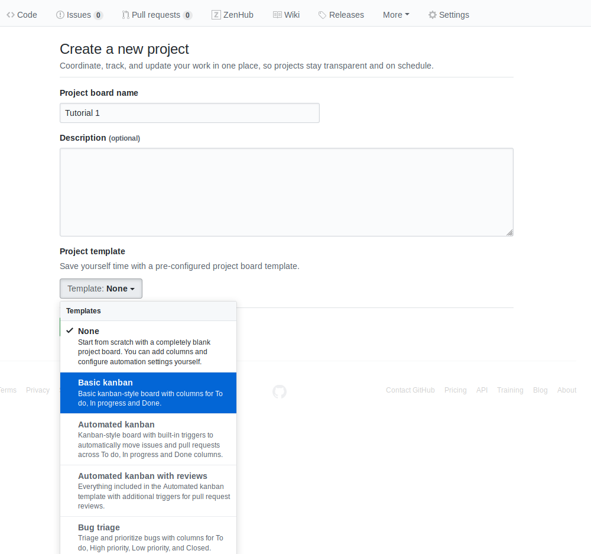
Tasks to complete:
-
Create a few issues to outline the tasks for the first deliverable. Assign them appropriate labels and add yourself as the assignee!

-
Create a milestone for the issues.

-
Create cards from the issues on the project board.
-
See how GitHub track the project progress as you move the cards from the different columns.
1.3. Command Line Basics
This section shows a few handy terminal commands. To practice the use of the command line without the risk of doing something unwanted to your files, you can use the free Webminal service: https://www.webminal.org/
1.3.1. Windows prerequisites
This step can be skipped if you are using MacOS or Linux. However, if you are using Windows, you need to have a terminal that supports the execution of basic Linux commands. Such programs are Git Bash or MinGW, for example.
You can find below a few helper steps to get MinGW running on your system.
-
Get the MinGW installer from here
-
Install it to wherever you like, the default installation folder is C:\MinGW
-
Once the setup finishes, open the MinGW Installation Manager
-
Select the two packages for installation as shown in the figure below

-
Click on Installation/Apply Changes. This will take a few moments to fetch and install the required packages.
-
You can open a terminal window by running the executable C:\MinGW\msys\1.0\bin\bash.exe
1.3.2. Basic file system operaions
-
Open a terminal, and try the following commands:
-
pwd: prints the present working directory
Example:$ pwd /home/ecse321 -
ls: lists the content of a given folder
Example:$ ls /home ecse321 guest-user admin -
cd: navigates the file system
Example:$ cd .. $ pwd /home $ cd ecse321 $ pwd /home/ecse321NoteThe following steps will include images that illustrate the commands and their output to prevent easy copy-paste. Sorry! :)
-
-
Creating files and reading/writing their contents
-
touch: creates a file -
mkdir: creates a directory -
mv: moves a file (or directory) from its current location to a target location -
echo: prints a string -
cat: prints the contents of a file
Example:
-
1.3.3. Finding files
The versatile find command allows us to find files based on given criteria. Take look at its manual page with man find!
Example:
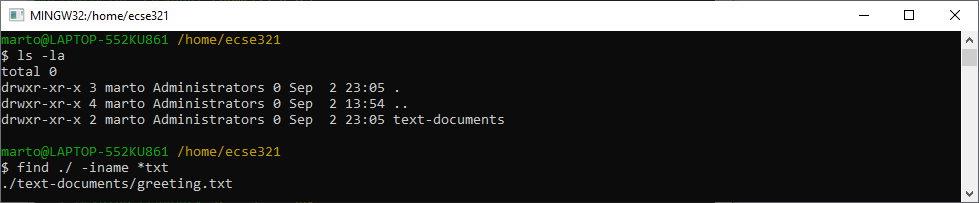
1.3.4. Batch file operations
-
sed: stream editor; changes a given string to a replacement
Combining find with an additional command (e.g., sed) can greatly speed up your repetitive tasks.
Example:

|
Note
|
The file helloworld.txt in the example is initially a copy of greeting.txt. |
1.3.5. Some additional useful commands
-
rm: removes a file -
cp -r: copies a directory recursively with its contents -
rmdir: remove an empty directory -
rm -rf: force to recursively delete a directory (or file) and all its contents -
nano: an easy-to-use text editor (not available by default in MinGW) -
grep: finds matches for a string in a given stream of characters -
ag: takes a string as argument and searches through the contents of files recursively to find matches of the given string (this tool is included in the silversearcher-ag package)
1.4. Git and GitHub
1.4.1. Installing Git
Install the Git version control system (VCS) from https://git-scm.com/downloads.
1.4.2. Creating a remote git repository on GitHub
-
Go to https://github.com/new
-
Set test as the name of the repository
-
Check the checkbox Initialize this repository with a README
-
Click on create repository
1.4.3. Cloning to a local repository
-
Open up a terminal (Git bash on Windows).
-
Navigate to the designated target directory (it is typical to use the
gitfolder within the home directory for storing Git repositories, e.g.,cd /home/username/git). -
Using a Git client, clone this newly created test repository to your computer. First, get the repository URL (use HTTPS for now).
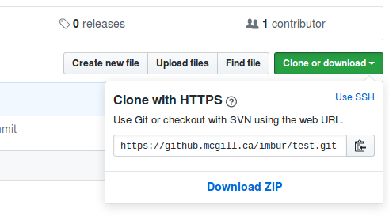
Then, issuegit clone https://url/of/the/repository.git
You should get an output similar to this:

-
Verify the contents of the working copy of the repository by
ls -la ./test. The .git folder holds version information and history for the repository, while the README.md is an auto-generated text file by GitHub.
1.4.4. Git basics
-
Open up a terminal and configure username and email address. These are needed to identify the author of the different changes.
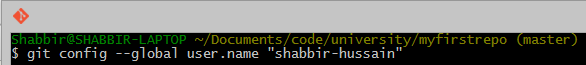
Glossary — Part 1:-
Git is your version control software
-
GitHub hosts your repositories
-
A repository is a collection of files and their history
-
A commit is a saved state of the repository
-
-
Enter the working directory, then check the history by issuing
git log. Example output:

-
Adding and commiting a file: use the
git addandgit commitcommands.


The effect of these commands are explained on the figure below:
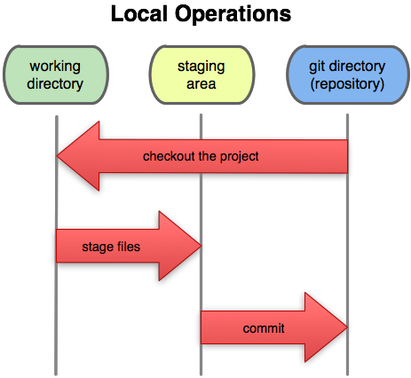
Glossary — Part 2:-
Working Directory: files being worked on right now
-
Staging area: files ready to be committed
-
Repository: A collection of commits
-
-
Checking current status is done with
git status.

-
Staging and unstaging files: use
git addto add andgit resetto remove files from the staging area.

 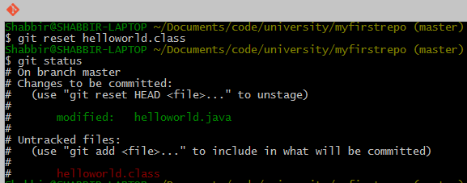Caution
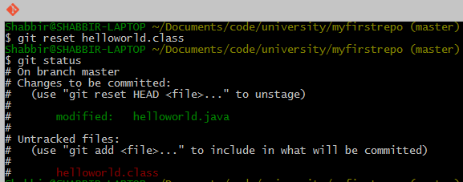CautionOnly staged files will be included in the next commit. -
To display detailed changes in unstaged files use
git diff, while usegit diff --stagedto show changes within files staged for commit.

-
Reverting to a previous version is done using
git checkout.
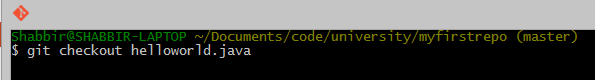 -
The commands
git pull(or thegit fetch+git rebasecombination) andgit pushare used to synchronize local and remote repositories.

1.4.5. Browsing commit history on GitHub
-
You can browse pushed commits in the remote repository online using GitHub. You can select the commits menu for a repository.

To get a link for a specific commit, click on the button with the first few characters of the hash of the commit.

The source for most of the images in the Git documentation: https://github.com/shabbir-hussain/ecse321tutorials/blob/master/01-githubTutorial1.pptx
1.5. Gradle: A Build Framework
1.5.1. Example Gradle application
This section focuses on writing a Gradle (https://gradle.org/) build script that builds a single Gradle project referred to as Computation. The source code and tests for a Java application is available here: Computation.zip (click the Dowload button in the upper left corner to get the whole zip file). It is your job to create/reorganize the folder called Computation, move sources and tests into that folder, and produce the Gradle build script build.gradle within this folder to automate the software build and testing process for this example project.
First, open a terminal, and ensure you have the newes version of Gradle (ver. 5.0+) installed with gradle --version.
Follow the steps below and add the snippets listed here to build.gradle, one after the other:
-
Create the following folder structure and a new build.gradle (empty) file within the Computation folder:
Computation
build.gradle
src
main
java
application
CompApp.java
computation
Computation.java
view
ComputationPage.java
test
java
computation
AllTests.java
ComputationTestAddSubstract.java
ComputationTestDivideMultiply.java
-
Add the
javaand theapplicationplugins to the build configuration script build.gradle.apply plugin: 'java' // This plugin has a predefined 'run' task that we can reuse to use Gradle to execute our application apply plugin: 'application' -
Add JUnit libraries to the
dependenciessection.repositories { mavenCentral() } dependencies { testImplementation "junit:junit:4.12" } -
Add and describe a new task
compile(type: JavaCompile)to specify all source files (both application and test) and set the build/bin as destination dir to put all compiled class files in.task compile(type: JavaCompile) { classpath = sourceSets.main.compileClasspath classpath += sourceSets.test.runtimeClasspath sourceSets.test.java.outputDir = file('build/bin') sourceSets.main.java.outputDir = file('build/bin') }NoteOne can specify source sets and their variables the following way: /* * specifying sourceSets is not necessary in this case, since * we are applying the default folder structure assumed by Gradle */ sourceSets { main { java { srcDir 'src/main/java' } } test { java { srcDir 'src/test/java'} } } -
Specify the main class and run the application.
mainClassName='application.CompApp'In the command line issue
gradle run -
Describe the
jarGradle task (defined by thejavaplugin) to produce an executable jar file intodistributable/.jar { destinationDir=file('distributable') manifest { // It is smart to reuse the name of the main class variable instead of hardcoding it attributes "Main-Class": "$mainClassName" } }
|
Note
|
The settings.gradle and its usage is to be shown later.
|
2. Backend
2.1. Setting up a Spring/Spring Boot backend app with Gradle
-
Install the Spring Boot CLI
-
Create a new repository under your account on GitHub for an example application that we are going to develop throughout the semester. Name the repository eventregistration. See more on the specification of the application functionality later.

-
Clone it somewhere on your disk. We assume you cloned it to ~/git/eventregistration.
-
Navigate to that folder in the terminal:
cd ~/git/eventregistration. -
Create a project for the backend application using Spring Boot CLI in this repository.
spring init \ --build=gradle \ --java-version=1.8 \ --package=ca.mcgill.ecse321.eventregistration \ --name=EventRegistration \ --dependencies=web,data-jpa,postgresql \ EventRegistration-BackendNoteBackslashes in this snippet indicate linebreaks in this one liner command typed in the terminal. You can select and copy-paste this snippet as-is. -
Navigate to the EventRegistration-Backend folder
-
For future use, locate the application.properties file in the src/ folder and add the following content:
server.port=${PORT:8080} spring.jpa.properties.hibernate.temp.use_jdbc_metadata_defaults = false spring.jpa.database-platform=org.hibernate.dialect.PostgreSQL9Dialect -
Locate the Java file containing the main application class (
EventRegistrationApplication.java) and add the following contentpackage ca.mcgill.ecse321.eventregistration; import org.springframework.boot.autoconfigure.SpringBootApplication; import org.springframework.boot.SpringApplication; import org.springframework.web.bind.annotation.RestController; import org.springframework.web.bind.annotation.RequestMapping; @RestController @SpringBootApplication public class EventRegistrationApplication { public static void main(String[] args) { SpringApplication.run(EventRegistrationApplication.class, args); } @RequestMapping("/") public String greeting(){ return "Hello world!"; } } -
Verify that it builds with
gradle build -xtest. -
Commit and push the files of the new Spring project.
git add . git status #verify the files that are staged for commit git commit -m "Initial commit of the backend application" git push
2.2. Travis CI
-
Go to https://travis-ci.com/, click on Sign up with GitHub.
-
Click on the green authorize button at the bottom of the page.
-
Activate Travis-CI on your GitHub account
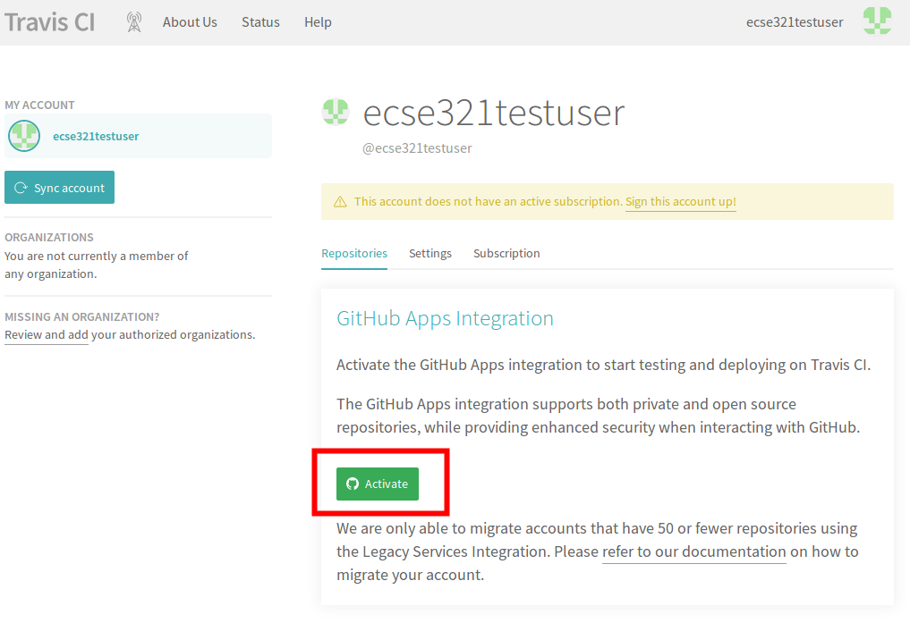 -
Select the repositories you want to build with Travis (make sure to include your repository that you created for this tutorial). You can modify this setting anytime later as well.
-
[Optional step: skip if you have a gradle project already] In your working copy of your repository, create a default Gradle java project.
-
Make sure you have Gradle installed (
gradle --version). -
Issue
gradle init --type java-library -
Add a
.gitignoreto ignore generated resources by Git:.gradle/ build/ -
Make sure your application is compiling by running
gradle build
-
-
Create a file called
.travis.yml:language: java script: - gradle build -
Commit and push your work. If everything is set up correctly, the build should trigger and Travis should run your build using Gradle.
2.3. Heroku
2.3.1. Preparations
-
Sign up/log in on Heroku by visiting https://www.heroku.com/.
-
Install the command line client for Heroku: Heroku CLI
NoteThe Travis client might also be useful at later stages of the course, you can install it from here: Travis CLI -
Log in to Heroku CLI by opening a terminal an typing:
heroku login.
2.3.2. Creating a Heroku app
We are creating a Heroku application and deploying the Hello world! Spring example. Additionally, the steps below will make it possible to store multiple different applications in the same git repository and deploy them individually to Heroku. Steps will be shown through the example EventRegistration application, and should be adapted in the course project.
|
Note
|
All actions described here for configuring Heroku applications using the Heroku CLI could also be done via the web UI. |
-
Once you are logged in with the Heroku-CLI, create a new Heroku application: in the root of the git repository of your repository (assumed to be ~/git/eventregistration), issue
heroku create eventregistration-backend-<UNIQUE_ID> -nto create an application named "eventregistration-backend-<UNIQUE_ID>".NoteIn Heroku, the application name should be unique Heroku-wise, that is, each application in Heroku’s system should have a unique name. If you don’t provide a name parameter for the command, Heroku will randomly generate one. -
Add the multi procfile and Gradle buildpacks to the app.
heroku buildpacks:add -a eventregistration-backend-<UNIQUE_ID> https://github.com/heroku/heroku-buildpack-multi-procfile heroku buildpacks:add -a eventregistration-backend-<UNIQUE_ID> heroku/gradleCautionOrder is important.
2.3.3. Adding a database to the application
-
Open the Heroku applications web page and go to Resources, then add the Heroku Postgres add-on.

-
Click the entry for Postgres within the list of add-ons, then go to Settings. You can see the database credentials there. 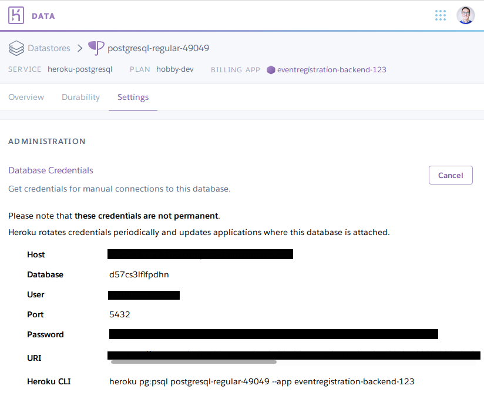
NoteThe credentials are periodically updated and changed by Heroku, so make sure that you are using the actual credentials when manually connecting to the database. (E.g., during manual testing.)
2.3.4. Extending the build for the Heroku deployment environment
-
Before deploying, a top level build.gradle and settings.gradle need to be created in the root of the repository (i.e., in ~/git/eventregistration)
build.gradle:task stage () { dependsOn ':EventRegistration-Backend:assemble' }settings.gradle:
include ':EventRegistration-Backend' -
Generate the Gradle wrapper with the newest Gradle version
gradle wrapper --gradle-version 5.6.2 -
Create a .gitignore file for the .gradle folder:
.gitignore:.gradle/ -
Add all new files to git
git add . git status #make sure that files in .gradle/ are not addedExpected output for
git status:On branch master Your branch is ahead of 'origin/master' by 2 commits. (use "git push" to publish your local commits) Changes to be committed: (use "git reset HEAD <file>..." to unstage) new file: .gitignore new file: build.gradle new file: gradle/wrapper/gradle-wrapper.jar new file: gradle/wrapper/gradle-wrapper.properties new file: gradlew new file: gradlew.bat new file: settings.gradleCommit changes:
git commit -m "Adding Gradle wrapper"
2.3.5. Supply application-specific setting for Heroku
-
Within the EventRegistration-Backend folder, create a file called Procfile (not Procfile.txt, name it exactly Procfile) with the content:
web: java -jar EventRegistration-Backend/build/libs/EventRegistration-Backend-0.0.1-SNAPSHOT.jar -
Add the Procfile to a new commit
-
Configure the multi-procfile buildpack to find the Procfile:
heroku config:add PROCFILE=EventRegistration-Backend/Procfile --app eventregistration-backend-<UNIQUE_ID>
2.3.6. Deploying the app
-
Obtain and copy the Heroku Git URL
heroku git:remote --app eventregistration-backend-<UNIQUE_ID> --remote backend-herokuOutput:
set git remote backend-heroku to https://git.heroku.com/eventregistration-backend-<UNIQUE_ID>.git -
Verify that the
backend-herokuremote is successfully added besidesoriginwithgit remote -v. Output:backend-heroku https://git.heroku.com/eventregistration-backend-123.git (fetch) backend-heroku https://git.heroku.com/eventregistration-backend-123.git (push) origin git@github.com:imbur/eventregistration.git (fetch) origin git@github.com:imbur/eventregistration.git (push) -
Deploy your application with
git push backend-heroku masterNoteIf it fails to build, make sure you try understanding the output. Typical issue: buildpacks are not added/are not in the right order. -
Visit the link provided in the build output. It may take some time (even 30-60 seconds) for the server to answer the first HTTP request, so be patient!
-
Save your work to the GitHub repository, too:
git push origin master
Final layout of the files (only two directory levels are shown and hidden items are suppressed):
~/git/eventregistration
build.gradle
EventRegistration-Backend
build
classes
libs
resources
tmp
build.gradle
gradle
wrapper
gradlew
gradlew.bat
Procfile
settings.gradle
src
main
test
gradle
wrapper
gradle-wrapper.jar
gradle-wrapper.properties
gradlew
gradlew.bat
README.md
settings.gradle
2.4. Domain modeling and code generation
2.4.1. Installing UML Lab
Go to the download page of UML Lab and install it on your machine. To activate it, use the licence key shared on MyCourses in the Sprint 1 folder.
|
Note
|
By the time of the tutorial, we may not have the license key ready. You should be able to work with a 30-day trial version in this case and activate your license later. |
2.4.2. UML Lab project setup
|
Note
|
Once you start UML Lab, there are some useful tutorials that help you learn about the features of the modeling tool. Furthermore, there is an introduction on how to use and configure UML Lab among the resources of Rice University. |
-
Create a new UML Lab Java project with the name
ca.mcgill.ecse321.eventregistration.modelwith the default project settings. -
Within the project, create a linked folder (Select Project → New Folder → Click Advanced Button → select "Link to alternate location (linked folder)" option) that points to the src/main/java folder of your
Eventregistration-Backendproject. Name the folder as src-gen. It will be used as the target for generating model code.
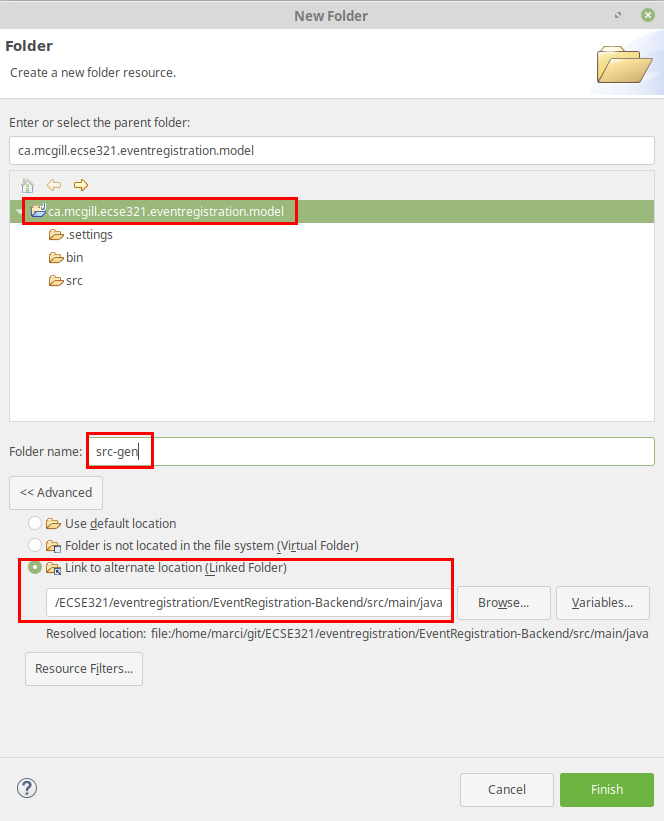CautionLinks to folders will not be versioned, so each team member needs to set this link individually after cloning the project. -
Open the ca.mcgill.ecse321.eventregistration.model.umlcd diagram file by double clicking it. It is an empty diagram by default.
-
Click on the empty diagram editor canvas and open the properties view and configure code generation path.

-
In the same Properties view, apply the Direct > JPA1 code style.

2.4.3. Domain modeling exercise: the Event Registration System
-
Using the Palette on the left hand side of the class diagram editor, create the following package structure and the
Personclass, and connect them with the Containment line. Once you save the diagram, the code should be generated to the src-gen folder (left part of the figure below).
 Note
NoteIf you disabled the automatic code generation on file save action, then you need to do right click the diagram → generate code manually. -
Study the generated
Personclass in theca/mcgill/ecse321/eventregistration/modelpackage (folder)! -
In the upcoming steps, we will use the
java.sql.Timeandjava.sql.Datedata types from the Java Runtime Library, so we need to add them to the model as datatypes.
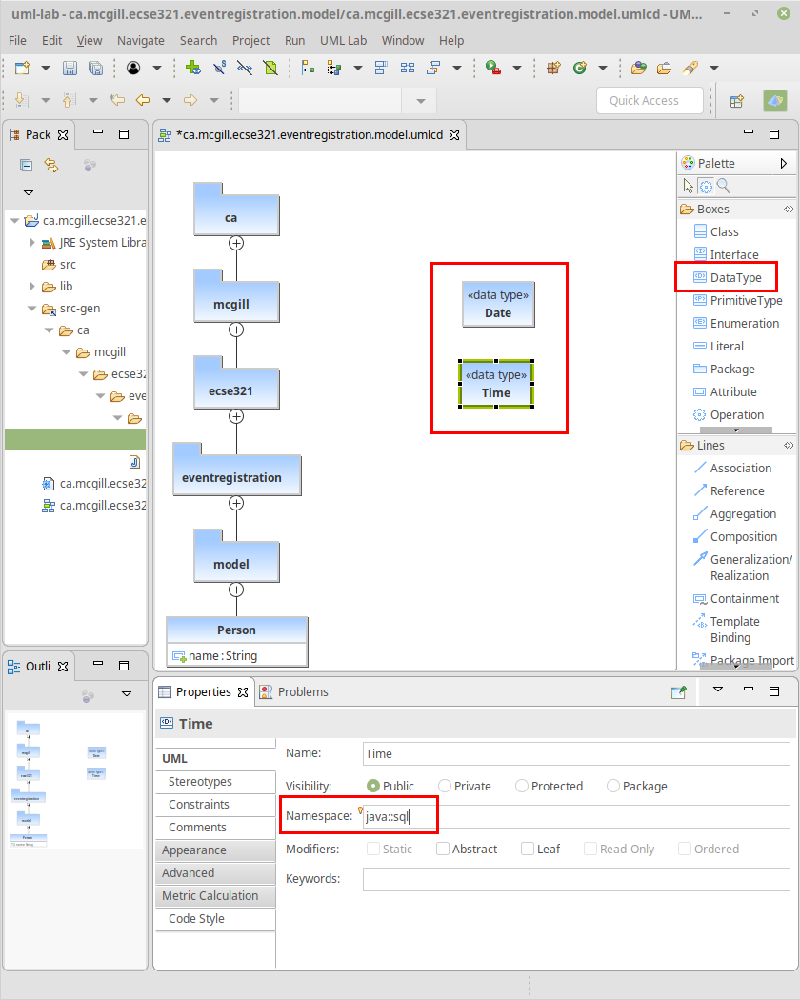 -
Extend the diagram by adding more classes and association and composition relations as shown below. Pay extra attention to the navigability and multiplicity of the references.
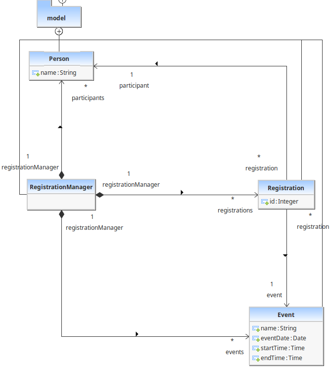 -
Select attributes to be primary keys (
Person: id isname,Event: id isname,Registration: id isid)
 Note
NoteVerify the generated code:remove any @OneToOneannotations from getters associated withDateandTimefrom theEventclass. -
Create an extra
intattribute for theRegistrationManageras well and set it as the ID (similarly to the other three classes).CautionIf you forget to supply an ID to any of your entities, Hibernate will throw an exception and you application will fail to start. -
Share the modeling project to git. You can use the command line git client or EGit.

2.5. Setting up a Spring-based Backend
You can download the Spring Tools Suite IDE from here.
2.5.1. Running the Backend Application from Eclipse
-
Import the EventRegistration-Backend Spring Boot project as a Gradle project from File > Import… > Gradle > Existing Gradle project using the default settings. Select the previously generated Spring project folder as the root of the project.

-
Ignore the bin folder.
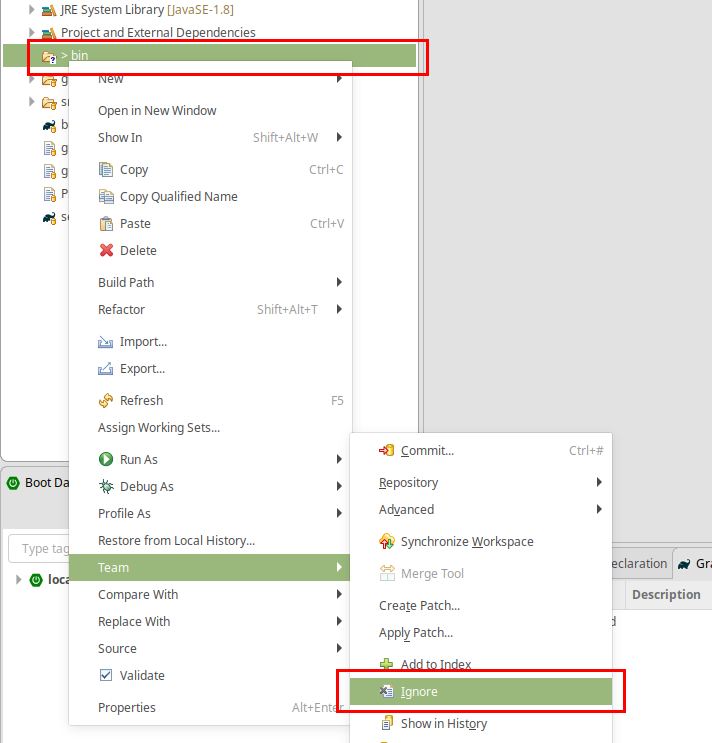 -
Find the
EventRegistrationApplication.javasource file, then right click and select Run As > Spring Boot App. The application will fail to start, since the database is not yet configured, but this action will create an initial run configuration. Example console output (fragment):[...] *************************** APPLICATION FAILED TO START *************************** Description: Failed to configure a DataSource: 'url' attribute is not specified and no embedded datasource could be configured. Reason: Failed to determine a suitable driver class [...] -
Obtain the database URL to access the database remotely, e.g., by opening up a terminal and running:
heroku run echo \$JDBC_DATABASE_URL --app=<YOUR_BACKEND_APP_NAME>. -
In Eclipse, open the EventRegistration-Backend - EventregistrationApplication run configuration page and add an environment variable called
SPRING_DATASOURCE_URLwith the value obtained in the previous step.

-
Add the
spring.jpa.hibernate.ddl-auto=updatetoapplication.properties. The database content along with the tables this way will be deleted (as necessary) then re-created each time your application starts.ImportantIn production, the value of this property should be none(instead ofupdate). Possible values arenone,create,validate, andupdate. -
If needed: troubleshooting:
-
If you get an error message saying something similar to
createClob() is not yet implemented, then you can try setting thespring.jpa.properties.hibernate.jdbc.lob.non_contextual_creation=truevariable in yourapplication.properties. It could be a workaround a workaround for an issue with Postgres. -
Sometimes environment variables don’t work with Spring apps. In this case you can set the
spring.datasource.url, thespring.datasource.username, and thespring.datasource.passwordvariables in the application properties as an alternative to setting theSPRING_DATASOURCE_URLenvironment variable. -
Make sure no other apps are running on localhost:8080. You can test it by opening the browser and entering
localhost:8080as the address.
-
2.5.2. Spring Transactions
-
Verify the contents of the
EventRegistrationApplicationclass:package ca.mcgill.ecse321.eventregistration; import org.springframework.boot.autoconfigure.SpringBootApplication; import org.springframework.boot.SpringApplication; import org.springframework.web.bind.annotation.RestController; import org.springframework.web.bind.annotation.RequestMapping; @RestController @SpringBootApplication public class EventRegistrationApplication { public static void main(String[] args) { SpringApplication.run(EventRegistrationApplication.class, args); } @RequestMapping("/") public String greeting() { return "Hello world!"; } } -
Create a new package in
src/main/javaand name itca.mcgill.ecse321.eventregistration.dao. -
Create the
EventRegistrationRepositoryclass within this new packagepackage ca.mcgill.ecse321.eventregistration.dao; import java.sql.Date; import java.sql.Time; import java.util.List; import javax.persistence.EntityManager; import javax.persistence.TypedQuery; import org.springframework.beans.factory.annotation.Autowired; import org.springframework.stereotype.Repository; import org.springframework.transaction.annotation.Transactional; import ca.mcgill.ecse321.eventregistration.model.Person; import ca.mcgill.ecse321.eventregistration.model.Event; @Repository public class EventRegistrationRepository { @Autowired EntityManager entityManager; @Transactional public Person createPerson(String name) { Person p = new Person(); p.setName(name); entityManager.persist(p); return p; } @Transactional public Person getPerson(String name) { Person p = entityManager.find(Person.class, name); return p; } @Transactional public Event createEvent(String name, Date date, Time startTime, Time endTime) { Event e = new Event(); e.setName(name); e.setDate(date); e.setStartTime(startTime); e.setEndTime(endTime); entityManager.persist(e); return e; } @Transactional public Event getEvent(String name) { Event e = entityManager.find(Event.class, name); return e; } } -
Add a new method that gets all events before a specified date (
deadline). Use a typed query created from an SQL command:@Transactional public List<Event> getEventsBeforeADeadline(Date deadline) { TypedQuery<Event> q = entityManager.createQuery("select e from Event e where e.date < :deadline",Event.class); q.setParameter("deadline", deadline); List<Event> resultList = q.getResultList(); return resultList; }
|
Note
|
To try the methods, you can create a JUnit test under src/test/java. Currently the methods in EventRegistrationRepository directly access the objects stored in the database via the EntityManager instance and these methods should implement both database operations and service business logic (including input validation — which we omitted in this part). In later sections, however, we will see how we can easily separate the database access and the service business logic in Spring applications.
|
2.5.3. Debugging: connecting to the database using a client
There are cases when a developer wants to know the contents of the database. In this case, a database client program can be used to access the database schema and table contents. Here are the general steps to access the Postgres database provided by Heroku:
-
Obtain the database URL to access the database remotely, e.g., by opening up a terminal and running:
heroku run echo \$JDBC_DATABASE_URL --app=<YOUR_BACKEND_APP_NAME>. -
The returned value follows the format that holds all main important parameters that are needed for accessing the database server:
jdbc:postgresql://<HOST>:<PORT>/<DATABASE_NAME>?user=<USERNAME>&password=<PASSWORD>&sslmode=requireThese parameters are:
-
Database host: the URL for the server
-
Port: the por on which the DB server is listening
-
Database name: the first section after the URL
-
Username: the first parameter value in the provided URL
-
Password: the second parameter value in the provided URL
-
-
With these parameters you can use any Postgres client you prefer to connect to the database. Here is an example for such a connection from Linux using
postgres-client:$> psql postgresql://ec2-54-243-223-245.compute-1.amazonaws.com:5432/d4412g60aaboa7?user=hdjnflfirvkmmr Password: psql (10.6 (Ubuntu 10.6-0ubuntu0.18.04.1)) SSL connection (protocol: TLSv1.2, cipher: ECDHE-RSA-AES256-GCM-SHA384, bits: 256, compression: off) Type "help" for help. d4412g60aaboa7=> \dt List of relations Schema | Name | Type | Owner --------+------------------------------------+-------+---------------- public | event | table | hdjnflfirvkmmr public | person | table | hdjnflfirvkmmr public | registration | table | hdjnflfirvkmmr public | registration_manager | table | hdjnflfirvkmmr public | registration_manager_events | table | hdjnflfirvkmmr public | registration_manager_persons | table | hdjnflfirvkmmr public | registration_manager_registrations | table | hdjnflfirvkmmr (7 rows) d4412g60aaboa7=> select * from event ; name | date | end_time | start_time ------+------------+----------+------------ e1 | 3899-10-09 | 12:00:00 | 10:00:00 (1 row) d4412g60aaboa7=> \q $>
2.6. CRUD Repositories
Previously, in the ca.mcgill.ecse321.eventregistration.dao.EventRegistrationRepository class we used an instance of javax.persistence.EntityManager from Hibernate to directly to implement the required operations related to saving/retrieving data to/from a database (Create, Read, Update, and Delete operations, shortly, CRUD).
This section will introduce the Spring framework’s inbuilt support for such CRUD operations via the org.springframework.data.repository.CrudRepository interface and will show how to use such repositories to implement your use cases in so-called service classes.
If you would like to, you can obtain a version of the project that already has the changes from the previous tutorials here.
2.6.1. Creating a CRUD Repository
-
Create a new interface
PersonRepositoryin theca.mcgill.ecse321.eventregistration.daopackage and extend theCrudRepository<Person, String>interface -
Create a new method
Person findByName(String name)package ca.mcgill.ecse321.eventregistration.dao; import org.springframework.data.repository.CrudRepository; import ca.mcgill.ecse321.eventregistration.model.Person; public interface PersonRepository extends CrudRepository<Person, String>{ Person findPersonByName(String name); } -
Since Spring supports automated JPA Query creation from method names (see possible language constructs here) we don’t need to implement the interface manually, Spring JPA will create the corresponding queries runtime! This way we don’t need to write SQL queries either.
-
Create interfaces for the
EventandRegistrationclasses as well
EventRepository.java:package ca.mcgill.ecse321.eventregistration.dao; import org.springframework.data.repository.CrudRepository; import ca.mcgill.ecse321.eventregistration.model.Event; public interface EventRepository extends CrudRepository<Event, String> { Event findEventByName(String name); }RegistrationRepository.java:
package ca.mcgill.ecse321.eventregistration.dao; import java.util.List; import org.springframework.data.repository.CrudRepository; import ca.mcgill.ecse321.eventregistration.model.Event; import ca.mcgill.ecse321.eventregistration.model.Person; import ca.mcgill.ecse321.eventregistration.model.Registration; public interface RegistrationRepository extends CrudRepository<Registration, Integer> { List<Registration> findByPerson(Person personName); boolean existsByPersonAndEvent(Person person, Event eventName); Registration findByPersonAndEvent(Person person, Event eventName); }
2.7. Unit Testing Persistence in the Backend
-
In a fresh Spring Boot project, there is already a single test class
EventRegistrationApplicationTestsin the src/test/java folder that looks like the following:package ca.mcgill.ecse321.eventregistration; import org.junit.jupiter.api.Test; import org.springframework.boot.test.context.SpringBootTest; @SpringBootTest class EventRegistrationApplicationTests { @Test void contextLoads() { } } -
Run this test that checks if the application can successfully load by right clicking on the class → Run as… → JUnit test
ImportantYou need to set the SPRING_DATASOURCE_URLfor the test run configuration as well if you use an environment variable to set datasource URL (see earlier). -
Add a new test class
ca.mcgill.ecse321.eventregistration.dao.TestEventRegistrationPersistenceand implement tests for the persistencepackage ca.mcgill.ecse321.eventregistration.dao; import static org.junit.jupiter.api.Assertions.assertEquals; import static org.junit.jupiter.api.Assertions.assertNotNull; import java.sql.Date; import java.sql.Time; import java.time.LocalDate; import java.time.LocalTime; import java.time.Month; import org.junit.jupiter.api.AfterEach; import org.junit.jupiter.api.Test; import org.junit.jupiter.api.extension.ExtendWith; import org.springframework.beans.factory.annotation.Autowired; import org.springframework.boot.test.context.SpringBootTest; import org.springframework.test.context.junit.jupiter.SpringExtension; import ca.mcgill.ecse321.eventregistration.model.Event; import ca.mcgill.ecse321.eventregistration.model.Person; import ca.mcgill.ecse321.eventregistration.model.Registration; @ExtendWith(SpringExtension.class) @SpringBootTest public class TestEventRegistrationPersistence { @Autowired private PersonRepository personRepository; @Autowired private EventRepository eventRepository; @Autowired private RegistrationRepository registrationRepository; @AfterEach public void clearDatabase() { // Fisrt, we clear registrations to avoid exceptions due to inconsistencies registrationRepository.deleteAll(); // Then we can clear the other tables personRepository.deleteAll(); eventRepository.deleteAll(); } @Test public void testPersistAndLoadPerson() { String name = "TestPerson"; // First example for object save/load Person person = new Person(); // First example for attribute save/load person.setName(name); personRepository.save(person); person = null; person = personRepository.findPersonByName(name); assertNotNull(person); assertEquals(name, person.getName()); } @Test public void testPersistAndLoadEvent() { String name = "ECSE321 Tutorial"; Date date = java.sql.Date.valueOf(LocalDate.of(2020, Month.JANUARY, 31)); Time startTime = java.sql.Time.valueOf(LocalTime.of(11, 35)); Time endTime = java.sql.Time.valueOf(LocalTime.of(13, 25)); Event event = new Event(); event.setName(name); event.setDate(date); event.setStartTime(startTime); event.setEndTime(endTime); eventRepository.save(event); event = null; event = eventRepository.findEventByName(name); assertNotNull(event); assertEquals(name, event.getName()); assertEquals(date, event.getDate()); assertEquals(startTime, event.getStartTime()); assertEquals(endTime, event.getEndTime()); } @Test public void testPersistAndLoadRegistration() { String personName = "TestPerson"; Person person = new Person(); person.setName(personName); personRepository.save(person); String eventName = "ECSE321 Tutorial"; Date date = java.sql.Date.valueOf(LocalDate.of(2020, Month.JANUARY, 31)); Time startTime = java.sql.Time.valueOf(LocalTime.of(11, 35)); Time endTime = java.sql.Time.valueOf(LocalTime.of(13, 25)); Event event = new Event(); event.setName(eventName); event.setDate(date); event.setStartTime(startTime); event.setEndTime(endTime); eventRepository.save(event); Registration reg = new Registration(); int regId = 1; // First example for reference save/load reg.setId(regId); reg.setPerson(person); reg.setEvent(event); registrationRepository.save(reg); reg = null; reg = registrationRepository.findByPersonAndEvent(person, event); assertNotNull(reg); assertEquals(regId, reg.getId()); // Comparing by keys assertEquals(person.getName(), reg.getPerson().getName()); assertEquals(event.getName(), reg.getEvent().getName()); } } -
Run this test suite by right clicking on the class → Run as… → JUnit test. Again, don’t forget to set the
SPRING_DATASOURCE_URLvalue for the run configuration.
2.8. Creating RESTful Web Services in Spring
The following steps provide guidance on (1) implementing business logic that implements the required functionality (classes annotated with @Service) and (2) exposing them using a REST API in the context of the Event Registration Application (classes annotated with @RestController).
2.8.1. Implementing Service Methods
We implement use-cases in service classes by using the DAOs for each data type of the domain model.
-
In src/main/java, create a new package
ca.mcgill.ecse321.eventregistration.service. -
In this package, create the
EventRegistrationServiceclass as shown belowpackage ca.mcgill.ecse321.eventregistration.service; import java.sql.Date; import java.sql.Time; import java.util.ArrayList; import java.util.List; import org.springframework.beans.factory.annotation.Autowired; import org.springframework.stereotype.Service; import org.springframework.transaction.annotation.Transactional; import ca.mcgill.ecse321.eventregistration.dao.EventRepository; import ca.mcgill.ecse321.eventregistration.dao.PersonRepository; import ca.mcgill.ecse321.eventregistration.dao.RegistrationRepository; import ca.mcgill.ecse321.eventregistration.model.Event; import ca.mcgill.ecse321.eventregistration.model.Person; import ca.mcgill.ecse321.eventregistration.model.Registration; @Service public class EventRegistrationService { @Autowired EventRepository eventRepository; @Autowired PersonRepository personRepository; @Autowired RegistrationRepository registrationRepository; @Transactional public Person createPerson(String name) { Person person = new Person(); person.setName(name); personRepository.save(person); return person; } @Transactional public Person getPerson(String name) { Person person = personRepository.findPersonByName(name); return person; } @Transactional public List<Person> getAllPersons() { return toList(personRepository.findAll()); } @Transactional public Event createEvent(String name, Date date, Time startTime, Time endTime) { Event event = new Event(); event.setName(name); event.setDate(date); event.setStartTime(startTime); event.setEndTime(endTime); eventRepository.save(event); return event; } @Transactional public Event getEvent(String name) { Event event = eventRepository.findEventByName(name); return event; } @Transactional public List<Event> getAllEvents() { return toList(eventRepository.findAll()); } @Transactional public Registration register(Person person, Event event) { Registration registration = new Registration(); registration.setId(person.getName().hashCode() * event.getName().hashCode()); registration.setPerson(person); registration.setEvent(event); registrationRepository.save(registration); return registration; } @Transactional public List<Registration> getAllRegistrations(){ return toList(registrationRepository.findAll()); } @Transactional public List<Event> getEventsAttendedByPerson(Person person) { List<Event> eventsAttendedByPerson = new ArrayList<>(); for (Registration r : registrationRepository.findByPerson(person)) { eventsAttendedByPerson.add(r.getEvent()); } return eventsAttendedByPerson; } private <T> List<T> toList(Iterable<T> iterable){ List<T> resultList = new ArrayList<T>(); for (T t : iterable) { resultList.add(t); } return resultList; } }
2.8.2. Exposing Service Functionality via a RESTful API
Building a RESTful Web Service Using a Controller and Data Transfer Objects
-
We first create a new package
ca.mcgill.ecse321.eventregistration.controllerin EventRegistration-Backend and then createEventRegistrationRestControllerclass inside it. We add the annotation@RestControllerto the controller class so that HTTP requests can be dispacthed toEventRegistrationRestControllerclass. In addition, we enabled the Cross-Origin Resource Sharing for any domain using the@CrossOriginannotation on the REST controller class.package ca.mcgill.ecse321.eventregistration.controller; import org.springframework.web.bind.annotation.CrossOrigin; import org.springframework.web.bind.annotation.RestController; @CrossOrigin(origins = "*") @RestController public class EventRegistrationRestController { @Autowired private EventRegistrationService service; } -
We further create another package ca.mcgill.ecse321.eventregistration.dto and create the below Data Transfer Object (DTO) classes inside that package. First we create EventDto.java.
ImportantData Access Object (DAO) != Data Transfer Object (DTO). These two are completely separate concepts, as you will also see below. These two should not be confused with each other. package ca.mcgill.ecse321.eventregistration.dto; import java.sql.Date; import java.sql.Time; public class EventDto { private String name; private Date eventDate; private Time startTime; private Time endTime; public EventDto() { } public EventDto(String name) { this(name, Date.valueOf("1971-01-01"), Time.valueOf("00:00:00"), Time.valueOf("23:59:59")); } public EventDto(String name, Date eventDate, Time startTime, Time endTime) { this.name = name; this.eventDate = eventDate; this.startTime = startTime; this.endTime = endTime; } public String getName() { return name; } public Date getEventDate() { return eventDate; } public Time getStartTime() { return startTime; } public Time getEndTime() { return endTime; } } -
Next, we create
PersonDtoJava class.package ca.mcgill.ecse321.eventregistration.dto; import java.util.Collections; import java.util.List; public class PersonDto { private String name; private List<EventDto> events; public PersonDto() { } @SuppressWarnings("unchecked") public PersonDto(String name) { this(name, Collections.EMPTY_LIST); } public PersonDto(String name, List<EventDto> arrayList) { this.name = name; this.events = arrayList; } public String getName() { return name; } public List<EventDto> getEvents() { return events; } public void setEvents(List<EventDto> events) { this.events = events; } } -
Finally, we create
RegistrationDtoJava class.package ca.mcgill.ecse321.eventregistration.dto; public class RegistrationDto { private PersonDto person; private EventDto event; public RegistrationDto() { } public RegistrationDto(PersonDto person, EventDto event) { this.person = person; this.event = event; } public PersonDto getperson() { return person; } public void setperson(PersonDto person) { this.person = person; } public EventDto getEvent() { return event; } public void setEvent(EventDto event) { this.event = event; } } -
We start adding the methods in the
EventRegistrationRestControllerclass. Also, we will add annotaions to map HTTP requests.TipIn Spring Tools Suite (a.k.a. Eclipse), you can organize Java imports with kbd:[Ctrl+Shift+o] @GetMapping(value = { "/persons", "/persons/" }) public List<PersonDto> getAllPersons() { return service.getAllPersons().stream().map(p -> convertToDto(p)).collect(Collectors.toList()); } @PostMapping(value = { "/persons/{name}", "/persons/{name}/" }) public PersonDto createPerson(@PathVariable("name") String name) throws IllegalArgumentException { Person person = service.createPerson(name); return convertToDto(person); }The
@RequestMappingannotation is used to map HTTP requests to Spring Controller methods. Since,@RequestMappingmaps all HTTP operations by default. We can use@GetMapping,@PostMappingand so forth to narrow this mapping to specific HTTP operations.Moreover, in the above snippet, we use the
valueparameter of@PathVariableannotation to bind the value of the query string parameter name into the name parameter of thecreatePerson()method. -
You can add other methods similarly with appropriate mappings.
@PostMapping(value = { "/events/{name}", "/events/{name}/" }) public EventDto createEvent(@PathVariable("name") String name, @RequestParam Date date, @RequestParam @DateTimeFormat(iso = DateTimeFormat.ISO.TIME, pattern = "HH:mm") LocalTime startTime, @RequestParam @DateTimeFormat(iso = DateTimeFormat.ISO.TIME, pattern = "HH:mm") LocalTime endTime) throws IllegalArgumentException { Event event = service.createEvent(name, date, Time.valueOf(startTime), Time.valueOf(endTime)); return convertToDto(event); } @GetMapping(value = { "/events", "/events/" }) public List<EventDto> getAllEvents() { List<EventDto> eventDtos = new ArrayList<>(); for (Event event : service.getAllEvents()) { eventDtos.add(convertToDto(event)); } return eventDtos; } @PostMapping(value = { "/register", "/register/" }) public RegistrationDto registerPersonForEvent(@RequestParam(name = "person") PersonDto pDto, @RequestParam(name = "event") EventDto eDto) throws IllegalArgumentException { Person p = service.getPerson(pDto.getName()); Event e = service.getEvent(eDto.getName()); Registration r = service.register(p, e); return convertToDto(r, p, e); } @GetMapping(value = { "/registrations/person/{name}", "/registrations/person/{name}/" }) public List<EventDto> getEventsOfPerson(@PathVariable("name") PersonDto pDto) { Person p = convertToDomainObject(pDto); return createEventDtosForPerson(p); } @GetMapping(value = { "/events/{name}", "/events/{name}/" }) public EventDto getEventByName(@PathVariable("name") String name) throws IllegalArgumentException { return convertToDto(service.getEvent(name)); } private EventDto convertToDto(Event e) { if (e == null) { throw new IllegalArgumentException("There is no such Event!"); } EventDto eventDto = new EventDto(e.getName(),e.getDate(),e.getStartTime(),e.getEndTime()); return eventDto; } private PersonDto convertToDto(Person p) { if (p == null) { throw new IllegalArgumentException("There is no such Person!"); } PersonDto personDto = new PersonDto(p.getName()); personDto.setEvents(createEventDtosForPerson(p)); return personDto; } private RegistrationDto convertToDto(Registration r, Person p, Event e) { EventDto eDto = convertToDto(e); PersonDto pDto = convertToDto(p); return new RegistrationDto(pDto, eDto); } private Person convertToDomainObject(PersonDto pDto) { List<Person> allPersons = service.getAllPersons(); for (Person person : allPersons) { if (person.getName().equals(pDto.getName())) { return person; } } return null; } private List<EventDto> createEventDtosForPerson(Person p) { List<Event> eventsForPerson = service.getEventsAttendedByPerson(p); List<EventDto> events = new ArrayList<>(); for (Event event : eventsForPerson) { events.add(convertToDto(event)); } return events; }
Trying (Smoke Testing of) the Application
We can see if our application is able to respond to HTTP requests using, e.g., the Postman (Chrome), RESTClient browser plugin (Firefox), Advanced Rest Client (Firefox), or the command line tool called curl.
Once you launch the client, you can specify the path and select the method as shown in the below figures.

Once we use POST, the record is persisted and then we can use the GET method to retrive the same.

Similary, we can try other methods as well.
2.8.3. Spring Data - an Alternative Way to Expose Application Data via a RESTful Interface
The advantage of using Spring Data Rest is that it can remove a lot of boilerplate compared to the previous sections. Spring would automatically create endpoints for classes, such as /events and /person in the Event Registration example. In this case, implementing proper error handling may require some extra effort (not discussed here).
|
Note
|
This section presents an alternative way of exposing your data via a REST API. You do not have to use this method if you do not think that it fits your design. |
-
Add the dependency 'spring-boot-starter-data-rest' in build.gradle file of your backend. It is required to expose Spring Data repositories over REST using Spring Data REST. Update your
dependenciessection as shown below:dependencies { implementation 'org.springframework.boot:spring-boot-starter-data-jpa' implementation 'org.springframework.boot:spring-boot-starter-web' implementation 'org.springframework.boot:spring-boot-starter-data-rest' runtimeOnly 'org.postgresql:postgresql' testImplementation('org.springframework.boot:spring-boot-starter-test') { exclude group: 'org.junit.vintage', module: 'junit-vintage-engine' } } -
We have already added the dependency
spring-boot-starter-data-restexposes DAOs over RESTful endpoints using Spring Data REST. -
Next, we can go to repository interfaces and add a
@RepositoryRestResourceannotaion.// REST endpoint specification @RepositoryRestResource(collectionResourceRel = "person_data", path = "person_data") public interface PersonRepository extends CrudRepository<Person, String>{ Person findPersonByName(String name); } -
Finally, we can access this REST API (
http://localhost:8080/person_data) in the browser or REST Client and will receive the JSON as shown below.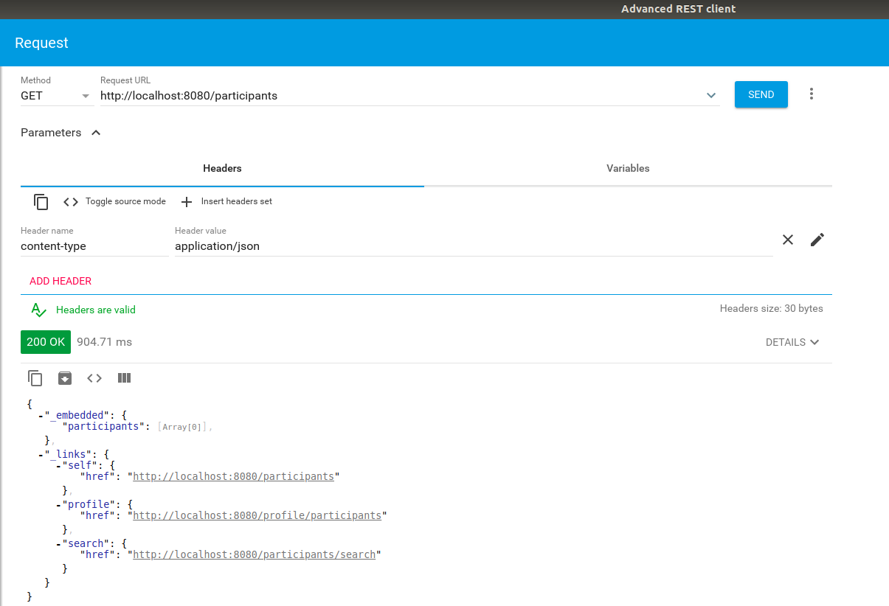
-
Exercise: turn on this Spring Data JPA feature for events and registrations, too.
-
Question: what information do we see in the response?
2.9. Unit Testing Service Methods in Backend
2.9.1. Service Unit Testing Setup with Mockito
We need extra dependencies to support testing of the business methods in isolation.
-
Add the following dependencies to the project:
testImplementation 'org.mockito:mockito-core:2.+' testImplementation 'org.mockito:mockito-junit-jupiter:2.18.3' testRuntime 'org.junit.jupiter:junit-jupiter-engine:5.3.1'TipFinding configuration settings for your Gradle/Maven projects is very simple by searaching for them on MVNRepository: https://mvnrepository.com/ -
If you also would like to run your project from Eclipse, add an additional dependency:
testImplementation 'org.junit.platform:junit-platform-launcher:1.4.1' -
Create a test class (in case you don’t already have one)
TestEventRegistrationServicein the corresponding package undersrc/test/java:package ca.mcgill.ecse321.eventregistration.service; import org.junit.jupiter.api.extension.ExtendWith; import org.mockito.junit.jupiter.MockitoExtension; @ExtendWith(MockitoExtension.class) public class TestEventRegistrationService { } -
Build your project to ensure its dependencies are correctly loaded.
2.9.2. Implementing Unit Tests for Service Class
-
Add the following static imports for methods:
import static org.junit.jupiter.api.Assertions.assertEquals; import static org.junit.jupiter.api.Assertions.assertNull; import static org.junit.jupiter.api.Assertions.fail; import static org.mockito.ArgumentMatchers.any; import static org.mockito.ArgumentMatchers.anyString; import static org.mockito.Mockito.lenient; import static org.mockito.Mockito.when; -
Add the following imports to the test class:
import java.sql.Date; import java.sql.Time; import java.time.LocalTime; import java.time.format.DateTimeFormatter; import java.util.Calendar; import org.junit.jupiter.api.BeforeEach; import org.junit.jupiter.api.Test; import org.junit.jupiter.api.extension.ExtendWith; import org.mockito.InjectMocks; import org.mockito.Mock; import org.mockito.invocation.InvocationOnMock; import org.mockito.junit.jupiter.MockitoExtension; import org.mockito.stubbing.Answer; import ca.mcgill.ecse321.eventregistration.dao.EventRepository; import ca.mcgill.ecse321.eventregistration.dao.PersonRepository; import ca.mcgill.ecse321.eventregistration.dao.RegistrationRepository; import ca.mcgill.ecse321.eventregistration.model.Event; import ca.mcgill.ecse321.eventregistration.model.Person; import ca.mcgill.ecse321.eventregistration.model.Registration; -
Create the DAO mock for person
@Mock private PersonRepository personDao; @InjectMocks private EventRegistrationService service; private static final String PERSON_KEY = "TestPerson"; @BeforeEach public void setMockOutput() { lenient().when(personDao.findPersonByName(anyString())).thenAnswer( (InvocationOnMock invocation) -> { if(invocation.getArgument(0).equals(PERSON_KEY)) { Person person = new Person(); person.setName(PERSON_KEY); return person; } else { return null; } }); } -
Add test cases from the complete test suite that is available from here.
-
Run the tests as JUnit/Gradle tests and interpret the test error messages! You should see only a few (at least one) tests passing.
-
Update the implementation (i.e., replace the current service method codes with the ones provided below) of the following methods with input validation in the
EventRegistrationServiceservice class to make the tests pass (we are rapid simulating a TDD process — TDD stands for Test-Driven Development)@Transactional public Person createPerson(String name) { if (name == null || name.trim().length() == 0) { throw new IllegalArgumentException("Person name cannot be empty!"); } Person person = new Person(); person.setName(name); personRepository.save(person); return person; } @Transactional public Person getPerson(String name) { if (name == null || name.trim().length() == 0) { throw new IllegalArgumentException("Person name cannot be empty!"); } Person person = personRepository.findPersonByName(name); return person; } @Transactional public Event getEvent(String name) { if (name == null || name.trim().length() == 0) { throw new IllegalArgumentException("Event name cannot be empty!"); } Event event = eventRepository.findEventByName(name); return event; } @Transactional public Event createEvent(String name, Date date, Time startTime, Time endTime) { // Input validation String error = ""; if (name == null || name.trim().length() == 0) { error = error + "Event name cannot be empty! "; } if (date == null) { error = error + "Event date cannot be empty! "; } if (startTime == null) { error = error + "Event start time cannot be empty! "; } if (endTime == null) { error = error + "Event end time cannot be empty! "; } if (endTime != null && startTime != null && endTime.before(startTime)) { error = error + "Event end time cannot be before event start time!"; } error = error.trim(); if (error.length() > 0) { throw new IllegalArgumentException(error); } Event event = new Event(); event.setName(name); event.setDate(date); event.setStartTime(startTime); event.setEndTime(endTime); eventRepository.save(event); return event; } @Transactional public Registration register(Person person, Event event) { String error = ""; if (person == null) { error = error + "Person needs to be selected for registration! "; } else if (!personRepository.existsById(person.getName())) { error = error + "Person does not exist! "; } if (event == null) { error = error + "Event needs to be selected for registration!"; } else if (!eventRepository.existsById(event.getName())) { error = error + "Event does not exist!"; } if (registrationRepository.existsByPersonAndEvent(person, event)) { error = error + "Person is already registered to this event!"; } error = error.trim(); if (error.length() > 0) { throw new IllegalArgumentException(error); } Registration registration = new Registration(); registration.setId(person.getName().hashCode() * event.getName().hashCode()); registration.setPerson(person); registration.setEvent(event); registrationRepository.save(registration); return registration; } @Transactional public List<Event> getEventsAttendedByPerson(Person person) { if (person == null ) { throw new IllegalArgumentException("Person cannot be null!"); } List<Event> eventsAttendedByPerson = new ArrayList<>(); for (Registration r : registrationRepository.findByPerson(person)) { eventsAttendedByPerson.add(r.getEvent()); } return eventsAttendedByPerson; } -
Run the tests again, and all should be passing this time.
2.9.3. Service Integration Testing with the curl Tool
The command line utility curl is one way to automate integration testing for the REST API of your application. This brief section shows a basic examples for using it for testing with persons.
-
Make sure you have a clean database for your integration tests. This can be done by using the
spring.jpa.hibernate.ddl-auto=create-dropsetting in the application.properties file for the test backend, or by exposing a database clear API function that is only used durint integration testing. -
Start the backend server.
-
Issue
curl -s http://localhost:8080/personsand observe the output! -
Use the
-Xswitch to specify the used HTTP method:$ curl -s -X POST http://localhost:8080/persons/testperson1 {"name":"testperson1","events":[]} $ curl -s -X POST http://localhost:8080/persons/testperson2 {"name":"testperson2","events":[]} $ curl -s -X http://localhost:8080/persons [{"name":"testperson1","events":[]},{"name":"testperson2","events":[]}] -
To verify that a given content is in the returned values, you can use the standard output result of the command and filter it, for example, using
grep$ curl -s -X GET http://localhost:8080/persons | grep -o testperson1 testperson1 -
A way to get started with implementing a Gradle task for integration testing (expected in the second deliverable) is to call a command line tool (e.g.,
curl) from Gradle. Gradle documentation has a section on how to achieve this: https://docs.gradle.org/5.6.2/dsl/org.gradle.api.tasks.Exec.html#org.gradle.api.tasks.Exec
2.10. Assessing Code Coverage using EclEmma
This tutorial covers the basics of EclEmma and retrieves code coverage metrics using it.
2.10.1. Getting EclEmma
Install EclEmma as a plugin in your Eclipse IDE from here.
|
Note
|
The Spring Tools Suite (STS) version of Eclipse already ships with the plugin pre-installed, so you can skip this step if you are using STS. |
2.10.2. Example Gradle Project for Assessing Code Coverage
We will create a Gradle project from scratch and be testing a simple method returnAverage(int[], int, int, int) .
-
Create a new Gradle project in Eclipse by clicking on File > New > Other

-
Under Gradle, choose Gradle Project

-
Click on Next, then name your project tutorial7, click on Finish
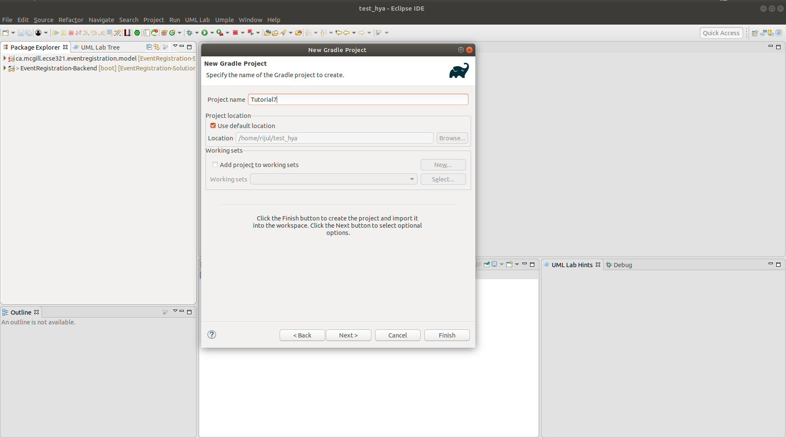NoteThe project may take some time to be created. -
Create a new package instead of the default ones for both the source and test folders (e.g
ca.mcgill.ecse321.tutorial7) and move the default generated classes (LibraryandLibraryTest) to this package.

-
Change the code in the
Libraryclasspackage ca.mcgill.ecse321.tutorial7; public class Library { public static double returnAverage(int value[], int arraySize, int MIN, int MAX) { int index, ti, tv, sum; double average; index = 0; ti = 0; tv = 0; sum = 0; while (ti < arraySize && value[index] != -999) { ti++; if (value[index] >= MIN && value[index] <= MAX) { tv++; sum += value[index]; } index++; } if (tv > 0) average = (double) sum / tv; else average = (double) -999; return average; } } -
Change the code in the
LibraryTestclasspackage ca.mcgill.ecse321.tutorial7; import static org.junit.Assert.assertEquals; import org.junit.Test; public class LibraryTest { @Test public void allBranchCoverageMinimumTestCaseForReturnAverageTest1() { int[] value = {5, 25, 15, -999}; int AS = 4; int min = 10; int max = 20; double average = Library.returnAverage(value, AS, min, max); assertEquals(15, average, 0.1); } @Test public void allBranchCoverageMinimumTestCaseForReturnAverageTest2() { int[] value = {}; int AS = 0; int min = 10; int max = 20; double average = Library.returnAverage(value, AS, min, max); assertEquals(-999.0, average, 0.1); } }
2.10.3. Retrieving Code Coverage Metrics
|
Note
|
We can straightforwardly manage code coverage using JaCoCo inside Eclipse with no configuration if we are using EclEmma Eclipse plugin. |
-
Run the Test in coverage mode using Eclemma. Click on LibraryTest, Coverage As, 1 JUnit Test

-
Verify that we have 100% branch coverage.
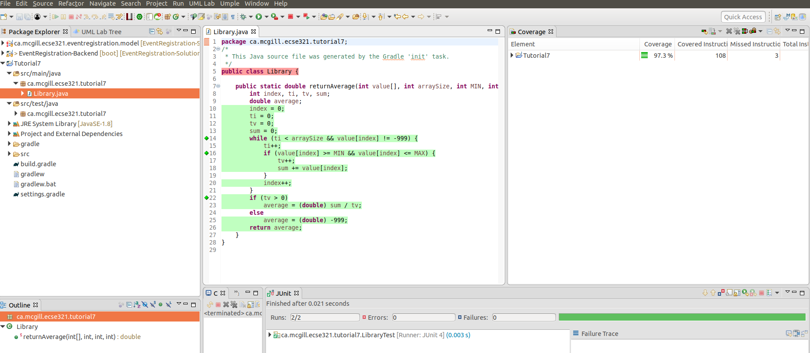
2.11. Event Registration Application Unit Code Coverage
-
Check the code coverage of the service unit tests in the EventRegistration-Backend project.
-
If you want to run the tests using gradle, use the Jacoco plugin with plugin ID
jacoco. After adding it to the build.gradle file, the plugin section should look like the one below:
plugins {
id 'org.springframework.boot' version '2.2.4.RELEASE'
id 'io.spring.dependency-management' version '1.0.9.RELEASE'
id 'java'
id 'jacoco'
}-
This new plugin gives us the
jacocoTestReporttask that can generate html reports. Try executing this task from the terminal and see the generated HTML files under build/reports/jacoco/test/html/! -
If you wish, you can check enforce a certain treshold on the test cases with this Jacoco plugin. With the definition below, the
./gradlew jacocoTestCoverageVerificationtask will fail if code coverage is below 60%.
jacocoTestCoverageVerification {
violationRules {
rule {
limit {
minimum = 0.6
}
}
}
}3. Web Frontent
3.1. Installation Instructions: Vue.js
Vue.js is a popular web frontend for building user interfacs in Javascript, which is considered to be easier to learn compared to React and Angular.
3.1.1. Install Vue.js
-
Open a shell (or run cmd.exe in Windows)
-
Check that you successfully installed node.js and npm e.g. by checking their versions:
$ node -v v8.10.0 $ npm -v 3.5.2 -
Install the command line interface (CLI) for Vue:
sudo npm install --global vue-cli
3.1.2. Generate initial Vue.js project content
-
Navigate to your local Git repository of the Event Registration System
$ cd ~/git/eventregistration
-
Generate initial content as follows
-
Hit Enter after each line if not indicated otherwise
-
Detailed instructions at https://github.com/vuejs-templates/webpack and https://bootstrap-vue.js.org/docs
$ vue init bootstrap-vue/webpack eventregistration-frontend ? Project name (EventRegistration-Frontend) eventregistration-frontend ? Project description (A Vue.js project) A Vue.js frontend for Event Registration App ? Author (Your Name <your.email@provider.com>) ? Vue build (Use arrow keys): > Runtime + Compiler Runtime-only ? Install vue-router (Y/n): Y ? Use ESLint to lint your code (Y/n): n ? Setup unit tests with Karma + Mocha (Y/n) Y ? Setup e2e tests with Nightwatch (Y/n) Y vue-cli Generated "eventregistration-frontend".
-
-
Rename the generated directory to match the naming convention applied for the backend project
mv eventregistration-frontend/ EventRegistration-Frontent -
Now execute the following commands (one after the other)
$ cd EventRegistration-Frontend $ npm install $ npm run dev -
As a result A sample web page should appear at http://localhost:8080/
-
You can stop this development server by pressing Ctrl+C in the shell
3.1.3. Install additional dependencies
-
Install JQuery and Axios (we will use these dependencies for issuing REST API calls):
npm install --save jquery
npm install --save axios3.1.4. Setting up your development server
-
We change the default port to 8087 (instead of the default 8080) and the default IP address by using a configuration file. The rationale behind this step is that other Tomcat servers may already listen at the default localhost:8080 port which may clash with our development server.
-
Open ./config/index.js and add
port: 8087tomodule.exports(bothbuildanddevpart)-
The development server is set up at localhost, i.e. http://127.0.0.1:8087
-
The production server is set up in accordance with the virtual machines
-
We also store the host IP address and port of the backend server in similar environment variables (
backendHostandbackendPort).module.exports = { build: { env: require('./prod.env'), host: 'eventregistration-frontend-123.herokuapp.com', port: 443, backendHost: 'eventregistration-backend-123.herokuapp.com', backendPort: 443, //... }, dev: { env: require('./dev.env'), host: '127.0.0.1', port: 8087, backendHost: '127.0.0.1', backendPort: 8080, //... } }
-
-
Open ./build/dev-server.js, and change the
uriassignment as follows:-
The original line of code can be commented or deleted.
//var uri = 'http://localhost:' + port var host = config.dev.host var uri = 'http://' + host + ':' + port
-
-
Start again your development server by
npm run dev. The same web application should now appear at http://127.0.0.1:8087/ -
Stop the development server by pressing Ctrl+C.
3.1.5. Commit your work to Github
-
If everything works then commit your work to your Github repository.
-
Notice that many libraries and files are omitted, which is intentional. Check the
.gitignorefile for details.
3.2. Create a Static Vue.js Component
Vue.js promotes the use of components which encapsulate GUI elements and their behavior in order to build up rich user interfaces in a modular way. A component consists of
-
template: A template of (a part of) an HTML document enriched with data bindings, conditional expressions, loops, etc.
-
script: The behavior of the user interface programmed in JavaScript.
-
style: The customized graphical appearance of HTML document elements.
We will first create a new Vue.js component and then connect it to a backend Java Spring service via a Rest API call.
3.2.1. Create a component file
|
Note
|
We use . below to refer to the EventRegistration-Frontend directory.
|
-
Create a new file EventRegistration.vue in ./src/components with the following initial content:
<template> </template> <script> </script> <style> </style> -
Create some static HTML content of the template part starting with a
<div>element corresponding to your component. We<template> <div id="eventregistration"> <h2>People</h2> <table> <tr> <td>John</td> <td>Event to attend</td> </tr> <tr> <td> <input type="text" placeholder="Person Name"> </td> <td> <button>Create</button> </td> </tr> </table> <p> <span style="color:red">Error: Message text comes here</span> </p> </div> </template> -
Customize the
<style>part with your designated CSS content. A detailed CSS reference documentation is available at https://www.w3schools.com/CSSref/. The final result of that part should like as follows.<style> #eventregistration { font-family: 'Avenir', Helvetica, Arial, sans-serif; color: #2c3e50; background: #f2ece8; } </style>
3.2.2. Create a new routing command
-
We need to route certain HTTP calls to a specific URL to be handled by EventRegistration.vue.
-
Open ./src/router/index.js and add a new route by extending the existing
routesproperty.export default new Router({ routes: [ { path: '/', name: 'Hello', component: Hello }, { path: '/app', name: 'EventRegistration', component: EventRegistration } ] })-
You should not change the number of spaces used as indentation otherwise you get error messages, if you have LInt enabled in your project.
-
Import the new component
EventRegistration.vueat the beginning of ./src/router/index.js after all existing imports!// add import after all existing imports import EventRegistration from '@/components/EventRegistration'
-
-
Start the development server and navigate your browser to http://127.0.0.1:8087/#/app. Your new Vue.js component should be rendered (with the static HTML content).
3.3. Vue.js Components with Dynamic Content
3.3.1. Add data and event handlers
Next we add event handling and dynamic content to our EventRegistration.vue component.
-
Create another file registration.js in the same folder which will contain the Javascript code for the EventRegistration.vue component.
-
Create constructor methods:
function PersonDto (name) { this.name = name this.events = [] } function EventDto (name, date, start, end) { this.name = name this.eventDate = date this.startTime = start this.endTime = end } -
Add data variables to the export declaration of the component.
export default { name: 'eventregistration', data () { return { people: [], newPerson: '', errorPerson: '', response: [] } }, //... } -
Add an initialization function below the data part.
created: function () { // Test data const p1 = new PersonDto('John') const p2 = new PersonDto('Jill') // Sample initial content this.people = [p1, p2] }, -
Add event handling method createPerson():
methods: { createPerson: function (personName) { // Create a new person and add it to the list of people var p = new PersonDto(personName) this.people.push(p) // Reset the name field for new people this.newPerson = '' } }
3.3.2. Create dynamic data bindings
-
Open
EventRegistration.vueand link the Javascript file as script:<script src="./registration.js"> </script> -
Change the static template content for the person list to dynamic bindings:
-
We iterate along all people in data property
peopleand dynamically print their name by{{ person.name }}(see list rendering) -
We print the (currently empty) list of events to which a person is registered to.
<table> <tr v-for="person in people" > <td>{{ person.name }}</td> <td> <ul> <li v-for="event in person.events"> {{event.name}} </li> </ul> </td> </tr> <!-- ... --> </table>
-
-
Link input field content with data variable
newPersonand button clicks for Create Person for event handler methodcreatePerson().<table> <!-- ... --> <tr> <td> <input type="text" v-model="newPerson" placeholder="Person Name"> </td> <td> <button @click="createPerson(newPerson)">Create Person</button> </td> </tr> </table> -
Bind the error message to the corresponding variable
errorPersonby extending the<span>tag with conditional rendering.-
The error message will only appear if the data property
errorPersonis not empty. -
You may wish to further refine error handling in case of empty string content for
newPersonby adding&& !newPersonto the condition.<span v-if="errorPerson" style="color:red">Error: {{errorPerson}} </span>
-
-
Run your frontend application and observe that two people are listed.
3.4. Calling Backend Services
Next we change our frontend to issue calls to the backend via the Rest API provided by the Java Spring framework. Please refer to the section 3.6.2 where we enabled the Cross-Origin Resource Sharing at the controller level using '@CrossOrigin' notation.
3.4.1. Calling backend services in from Vue.js components
We need to modify our frontend to make calls to backend services.
-
Open registration.js and add the following content to the beginning:
-
Note that instead of hard-wired IP addresses and ports, details are given in a configuration file.
import axios from 'axios' var config = require('../../config') var frontendUrl = 'http://' + config.dev.host + ':' + config.dev.port var backendUrl = 'http://' + config.dev.backendHost + ':' + config.dev.backendPort var AXIOS = axios.create({ baseURL: backendUrl, headers: { 'Access-Control-Allow-Origin': frontendUrl } })
-
-
Now navigate to the created function, and replace existing content with the following lines:
created: function () { // Initializing people from backend AXIOS.get(`/persons`) .then(response => { // JSON responses are automatically parsed. this.people = response.data }) .catch(e => { this.errorPerson = e; }); } -
Navigate to the createPerson() method and change its content as follows:
createPerson: function (personName) { AXIOS.post(`/persons/`+personName, {}, {}) .then(response => { // JSON responses are automatically parsed. this.people.push(response.data) this.newPerson = '' this.errorPerson = '' }) .catch(e => { var errorMsg = e.message console.log(errorMsg) this.errorPerson = errorMsg }); } -
Run the frontend application and check that
-
New people can be added
-
They immediately appear in the people list.
-
3.5. Build and Travis-CI
Travis-CI supports building nodejs projects. However, we do not want to run the default npm test command. Instead, the build should do npm install only.
3.6. Additional steps in the tutorial
|
Important
|
Solutions have been added to this section shortyl after the school closure due to the pandemic was announced. See completed version at https://github.com/imbur/eventregistration-w2020 |
3.6.1. Steps to complete Managing events
The description of the next steps is intentionally high-level and sketchy to force you to face and solve several emerging problems.
You need to provide the following functionality by extending the Vue.js component:
-
List all events (name, eventDate, startTime, endTime)
-
Introduce an array events in the frontend data store
Update your registration.js:
data() { return { persons: [], events: [], // ... other data members } }, -
Call the appropriate backend service to fill the contents
Update your registration.js:
created: function () { // Initializing persons // See: was done above // Initializing events AXIOS.get('/events').then(response => {this.events = response.data}).catch(e => {this.errorEvent = e}); }, -
Provide a dynamic list in the component and bind it to events
Update your EventRegistration.vue:
<span v-if="errorPerson" style="color:red">Error: {{errorPerson}}</span> <!-- This line above is the last line of the section we added in the previous section -- this is only here to ease the navigation in the code --> <hr> <h2>Events</h2> <table id='events-table'> <tr> <th>Name</th> <th>Date</th> <th>Start</th> <th>End</th> </tr> <tr v-for="(event, i) in events" v-bind:id="event.name" v-bind:key="`event-${i}`"> <td v-bind:id="`${event.name.replace(/\s/g, '_')}-name`">{{event.name}}</td> <td v-bind:id="`${event.name.replace(/\s/g, '_')}-date`">{{event.eventDate}}</td> <td v-bind:id="`${event.name.replace(/\s/g, '_')}-starttime`">{{event.startTime}}</td> <td v-bind:id="`${event.name.replace(/\s/g, '_')}-endtime`">{{event.endTime}}</td> </tr> </table> <hr>
-
-
Create a new event (name, date, startTime, endTime)
-
Introduce an object newEvent in the frontend data store with four properties (e.g. name, date, startTime, endTime).
-
Set the initial values of these properties to somet value
Update registration.js and add to
data()at the topnewEvent: { name: '', eventDate: '2017-12-08', startTime: '09:00', endTime: '11:00' }, errorEvent: '',
-
-
Provide a button to initiate creating a new event and provide HTML input fields to set event details
-
Create a call to the appropriate backend service, i.e. createEvent()
Update EventRegistration.vue
<!-- Add this to the bottom of the table created for displaying events --> <tr> <td> <input id="event-name-input" type="text" v-model="newEvent.name" placeholder="Event Name"> </td> <td> <input id="event-date-input" type="date" v-model="newEvent.eventDate" placeholder="YYYY-MM-DD"> </td> <td> <input id="event-starttime-input" type="time" v-model="newEvent.startTime" placeholder="HH:mm"> </td> <td> <input id="event-endtime-input" type="time" v-model="newEvent.endTime" placeholder="HH:mm"> </td> <td> <button id="event-create-button" v-bind:disabled="!newEvent.name" v-on:click="createEvent(newEvent)">Create</button> </td> </tr> -
Introduce an object errorEvent for error message related to event creation
This one has been done for registration.js already (
errorEventindata()) -
Provide corresponding HTML field for displaying the error message (e.g.
<span>), and set its appearance condition to the content of the error messageUpdate EventRegistration.vue: add the following code to the event table
<span id="event-error" v-if="errorEvent" style="color:red">Error: {{errorEvent}}</span>
-
-
Register a person to an event (when a new event should occur in the list of events printed next to a person)
-
Provide a selection of people
-
You need a corresponding data variable (e.g. selectedPerson)
-
You can use the HTML
<select v-model="selectedPerson">tag where each option (<option>tag withv-forVue.js parameter) is filled dynamically from the list of people. -
Hint: You can add a first disabled option as follows:
<option disabled value="">Please select one</option>
-
-
Provide a selection of events in a similar way.
-
Provide a button to initiate registration
-
Enable the button only if both a person and an event are selected
The solution for the above bullet points (goes to EventRegistration.vue):
<hr> <h2>Registrations</h2> <label>Person: <select id='registration-person-select' v-model="selectedPerson"> <option disabled value="">Please select one</option> <option v-for="(person, i) in persons" v-bind:key="`person-${i}`">{{person.name}}</option> </select> </label> <label>Event: <select id='registration-event-select' v-model="selectedEvent"> <option disabled value="">Please select one</option> <option v-for="(event, i) in events" v-bind:key="`event-${i}`">{{event.name}}</option> </select> </label> <button id='registration-button' v-bind:disabled="!selectedPerson || !selectedEvent" @click="registerEvent(selectedPerson, selectedEvent)">Register</button> <br/> <span v-if="errorRegistration" style="color:red">Error: {{errorRegistration}}</span> <hr> -
Implement the register method in registration.js:
registerEvent: function (personName, eventName) { let event = this.events.find(x => x.name === eventName); let person = this.persons.find(x => x.name === personName); let params = { person: person.name, event: event.name }; AXIOS.post('/register', {}, {params: params}) .then(response => { person.events.push(event) this.selectedPerson = ''; this.selectedEvent = ''; this.errorRegistration = ''; }) .catch(e => { e = e.response.data.message ? e.response.data.message : e; this.errorRegistration = e; console.log(e); }); },-
To run your applicaiton, use
npm installandnpm run dev -
See https://github.com/imbur/eventregistration-w2020 for the completed solution
-
-
3.6.2. Further documentation
-
Vue.js guide: https://vuejs.org/v2/guide/
-
Vue.js API: https://vuejs.org/v2/api/
-
Build commands: http://vuejs-templates.github.io/webpack/commands.html
-
Vue.js and Webpack integration: http://vuejs-templates.github.io/webpack/env.html
-
Html-Webpack: https://github.com/jantimon/html-webpack-plugin
-
Vue Router: https://github.com/vuejs/vue-router
-
Vue Router tutorial: https://scotch.io/tutorials/getting-started-with-vue-router